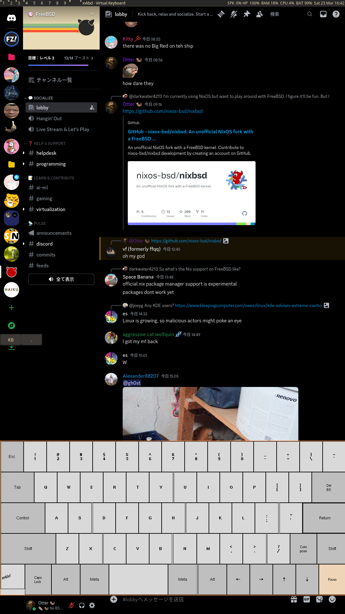

© 🦦 Otter(tm), A true otter No CSS? Too Slow?


🦦
So, I was looking at OLED laptops, when I stumbled upon a deal I could NOT decline, a *basically* new Asus ZenBook Flip 13 OLED with an i7-1165g7 and 16 gigs of ram for 250 euro... 250 euro! Where I live that's more than a good deal.
When I received it, I was surprised at how smol and adorable it was... like, it's so smol! It's smaller than my macbook air 2017, and definitely weighs less too! I was even more surprised when I turned it on, I am very used to pretty bad laptop screens, we're talking 54% sRGB TN panels, I do have a pixel 6a which does have an OLED screen, but I guess it's different when the screen is that small, THIS SCREEN IS BEAUTIFUL, even the resolution is nice at 1080p, 13 inches and 1080p is comfortable enough and has enough space to move around without requiring scaling.
So, I grabbed my USB stick and started installing freeBSD on the OtterPad Pro (Yes, from this point, I already had a a name for it). First thing I realized is that, fans were loud and all, I thought using powerdxx would fix this, I didn't realize that intel CPUs (any that is EVO iirc?), have their own power consumption thing and since FreeBSD is mostly used on desktops, it was on performance mode by default, modifying machdep.hwpstate_pkg_ctrl and dev.hwpstate_intel.N.epp fixed this issue.
However, there was things that were surprising, the touchscreen automatically worked, and so did quite literally everything else, it's surprising how easy to use FreeBSD has gotten, the only issue I had was when rotating my display using xrandr, wouldn't rotate my touchscreen input, if that makes sense? calibrating it with xinput fixed it however, I just have an extra script that does both of those things for me
I then decided to grab my OtterShortfcuts repo to make a proof of concept app to make tablet-mode somewhat useable, things like toggleable keyboard and screen rotation through touch
This was a pretty bad solution as the control panel was taking quite a bit of screen space, not sticky therefore only viewable on one workspace.
With some editing of a sticky window DWM patch, I got these apps to be sticky and floating from the start, which allowed me to have a more convencing virtual keyboard, I also was experimenting with theming, as I wanted to take advantage of the pure blacks
The Folding feature of this device is so cool that i decided to experiment with it more: Using it as a second display with a dongle and all, I later enjoyed this setup so much that it replaced my more powerful tower for most things. Plus, this thing is a nice ebook reader, this is how my setup looks today. My laptop, My desktop, My tablet. Gotta love tech.